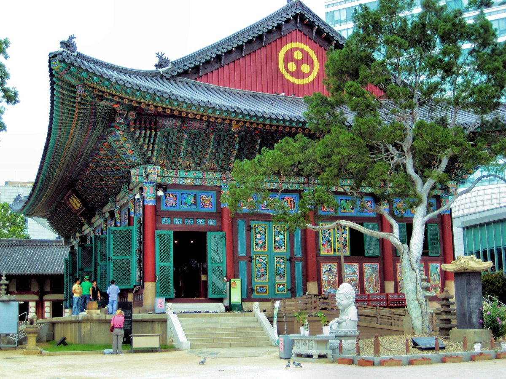

사찰 에너지 자립 설명회서 태양광 '자가소비형'·'부지임대형' 두 모델 나와…초기 비용·행정 절차에 막힌 사찰 겨냥

불교환경연대·비로자나자연에너지협동조합, 29일 서울서 설명회…요사채 지붕은 직접 쓰고 주차장은 사업자에 빌려주는 방식, 현장 진단부터 인허가·시공까지 돕겠다고 밝혀
사찰이 태양광으로 전기를 직접 만들어 쓰거나 남는 땅을 발전사업자에게 빌려주는 두 가지 길이 불교계 설명회에서 제시됐다. 불교환경연대와 비로자나자연에너지협동조합은 29일 서울 한국불교역사문화기념관 국제회의장에서 사찰 에너지 자립 설명회 '불교, 재생에너지를 품다'를 열었다. 재생에너지에 관심은 있지만 처음 드는 비용과 까다로운 행정 절차, 시공업체에 대한 불신 때문에 실제로 나서지 못한 사찰을 돕겠다는 취지다. 협동조합 불교탄소중립실천단의 전병욱 부단장은 종무소·요사채 지붕에 설비를 달아 정부 보조금으로 설치비를 덜고 전기요금을 줄이는 '자가소비형'과, 주차장 같은 빈 공간을 사업자에게 내주고 사업자가 투자·운영·유지보수를 맡는 대신 사찰이 임대수익을 받는 '부지임대형'을 소개했으며, 실천단은 현장 진단으로 맞는 모델을 고른 뒤 인허가와 계약 검토, 시공까지 돕겠다고 했다. 이날 안산시민햇빛발전협동조합 관계자가 종교시설 설치 사례를, LG전자 관계자가 공기열 히트펌프의 사찰 적용 방안을 발표했고 사찰별 개별 상담도 열렸다. 불교환경연대 상임대표 법만스님은 인사말에서 스스로 에너지를 만들어 쓰는 일이 "소욕지족의 가르침을 실천하는 수행이기도 하다"며 참여를 당부했다.
시민에너지 관점
이날 나온 두 모델은 사찰이 비용을 아끼는 길(자가소비형)과 땅값을 받는 길(부지임대형)이다. 부지임대형은 사찰이 투자 부담을 지지 않는 대신 설비와 발전 수익은 사업자 몫으로 남고, 사찰에는 임대료만 돌아간다. 초기 비용과 시공업체 불신이 걸림돌이라면 답은 남에게 땅을 맡기는 데만 있지 않다. 사찰과 신도, 이웃 주민이 함께 출자해 설비의 주인이 되고 수익을 지역과 나누는 시민 협동조합형이 세 번째 선택지로 같은 자리에 올라야 한다.
출처: 불교신문 2026-10-29 이도열 기자 원문 보기
寺院のエネルギー自立説明会で太陽光「自家消費型」「敷地賃貸型」の2モデル…初期費用・行政手続きで足踏みする寺院が対象
仏教環境連帯・毘盧遮那自然エネルギー協同組合、29日ソウルで説明会…僧坊の屋根では直接使い、駐車場は事業者に貸す方式、現地診断から許認可・施工まで支援する方針
寺院が太陽光で電気を自ら作って使う方法と、空いた土地を発電事業者に貸す方法の2つが、仏教界の説明会で示された。仏教環境連帯と毘盧遮那自然エネルギー協同組合は29日、ソウルの韓国仏教歴史文化記念館国際会議場で、寺院のエネルギー自立説明会「仏教、再生可能エネルギーを抱く」を開いた。再生可能エネルギーに関心はあっても、初期費用や複雑な行政手続き、施工業者への不安から実際には踏み出せずにいる寺院を後押しする狙いだ。協同組合の仏教カーボンニュートラル実践団のチョン・ビョンウク副団長は、宗務所や僧坊の屋根に設備を設け、政府の補助金で設置費を抑えて電気料金を減らす「自家消費型」と、駐車場などの空きスペースを事業者に提供し、事業者が投資・運営・保守を担う代わりに寺院が賃貸収入を得る「敷地賃貸型」を紹介した。実践団は現地診断で合ったモデルを選び、許認可や契約の確認、施工まで支援するという。この日は安山市民太陽光発電協同組合の関係者が宗教施設での設置事例を、LG電子の関係者が空気熱ヒートポンプの寺院への適用策を発表し、寺院ごとの個別相談も行われた。仏教環境連帯の常任代表、法満（ポプマン）僧侶はあいさつで、自らエネルギーを作って使うことは「少欲知足の教えを実践する修行でもある」と述べ、参加を呼びかけた。
市民エネルギーの視点
この日示された2つのモデルは、寺院が費用を節約する道（自家消費型）と地代を受け取る道（敷地賃貸型）だ。敷地賃貸型は寺院が投資負担を負わない代わりに、設備と発電収益は事業者のものとして残り、寺院には賃料だけが入る。初期費用や施工業者への不信が壁なら、答えは土地を他人に任せることだけではない。寺院と信徒、近隣住民がともに出資して設備の持ち主となり、収益を地域と分かち合う市民協同組合型が、3つ目の選択肢として同じ場に並ぶべきだ。
出典: 仏教新聞 2026-10-29 イ・ドヨル記者 原文を読む
寺院能源自立说明会提出光伏"自发自用型"和"场地出租型"两种模式…面向受困于初期成本和行政手续的寺院
佛教环境连带与毗卢遮那自然能源合作社29日在首尔举办说明会…僧舍屋顶自发自用、停车场租给发电企业，并表示将从现场诊断到审批、施工全程协助
在韩国佛教界的一场说明会上，提出了寺院利用太阳能自发自用、或把闲置土地租给发电企业的两条路径。佛教环境连带与毗卢遮那自然能源合作社29日在首尔韩国佛教历史文化纪念馆国际会议厅举办寺院能源自立说明会"佛教，拥抱可再生能源"。说明会旨在帮助那些虽然关心可再生能源，却因初期成本、繁琐的行政手续以及对施工企业的顾虑而迟迟未能行动的寺院。合作社佛教碳中和实践团副团长전병욱(Jeon Byeong-uk)介绍了两种模式：一是在宗务所、僧舍屋顶安装设备，借助政府补贴减轻安装费用、降低电费的"自发自用型"；二是把停车场等闲置空间提供给发电企业，由企业负责投资、运营和维护，寺院收取租金的"场地出租型"。实践团表示将通过现场诊断选择合适的模式，并协助办理审批、审核合同直至施工。当天，安山市民阳光发电合作社的相关人士介绍了宗教设施的安装案例，LG电子的相关人士说明了空气源热泵在寺院的应用方案，现场还为各寺院提供了个别咨询。佛教环境连带常任代表法满法师在致辞中表示，自己生产并使用能源"也是践行少欲知足教诲的修行"，呼吁各寺院参与。
市民能源视角
当天提出的两种模式，一种是寺院节省开支（自发自用型），一种是寺院收取地租（场地出租型）。场地出租型让寺院不必承担投资，但设备和发电收益仍归企业，寺院只拿到租金。如果初期成本和对施工企业的不信任是障碍，答案就不只是把土地交给别人。由寺院、信众和周边居民共同出资成为设备的主人、并与地方分享收益的市民合作社模式，应当作为第三种选择一同摆上桌面。
来源: 佛教新闻 2026-10-29 이도열(Lee Do-yeol)记者 查看原文
Temple energy self-reliance briefing presents two solar models, 'self-consumption' and 'site lease,' for temples held back by upfront costs and paperwork
Buddhist Environmental Solidarity and Vairocana Natural Energy Cooperative hold briefing in Seoul on Oct. 29; temples would use power from residence roofs directly or lease parking lots to developers, with help offered from site assessment to permits and construction
Two ways for Buddhist temples to go solar, generating power for their own use or leasing spare land to power developers, were presented at a briefing for Korea's Buddhist community. Buddhist Environmental Solidarity and the Vairocana Natural Energy Cooperative held the temple energy self-reliance briefing "Buddhism Embraces Renewable Energy" on Oct. 29 at the international conference hall of the Korean Buddhism History and Culture Memorial Hall in Seoul. The aim was to help temples that are interested in renewable energy but have held back because of upfront costs, complicated administrative procedures and distrust of installers. Jeon Byeong-uk, deputy head of the cooperative's Buddhist carbon neutrality action team, introduced a "self-consumption" model, in which panels on temple office and residence roofs cut electricity bills with government subsidies easing installation costs, and a "site lease" model, in which spaces such as parking lots are offered to a developer that handles investment, operation and maintenance while the temple collects rent; the team said it would assess each site, recommend a model and help with permits, contract review and construction. A representative of the Ansan Citizens' Solar Power Cooperative presented installation cases at religious facilities, an LG Electronics official explained how air-source heat pumps could be used at temples, and individual consultations were offered to temples. The Venerable Beopman, standing representative of Buddhist Environmental Solidarity, said in his greeting that producing and using one's own energy "is also a practice of the teaching of wanting little and knowing contentment," and urged temples to take part.
Citizen Energy View
The two models on offer are a way for temples to save money (self-consumption) and a way to collect ground rent (site lease). Under a site lease the temple carries no investment burden, but the equipment and generation income stay with the developer and only rent flows to the temple. If upfront costs and distrust of installers are the obstacles, the answer is not only to hand the land to someone else. A citizen cooperative model, in which temples, worshippers and neighbours invest together, own the equipment and share the income with the community, should be put on the same table as a third option.
Source: The Buddhist Newspaper (Bulgyo Sinmun) 2026-10-29 Lee Do-yeol Read the original